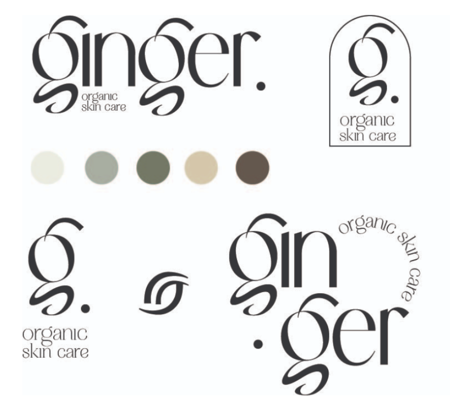

Ginger Skincare is a luxury skincare brand that embraces the beauty of minimalism while delivering powerful, high-quality results.
Designed for a modern, discerning audience of Gen Z to Millennials, the brand focuses on clean, effective formulations that highlight the purity of ingredients. With sleek, simple packaging and a focus on eco-conscious practices, Ginger Skincare embodies the perfect balance of sophistication and simplicity. Every product is crafted to meet the needs of individuals who appreciate luxury without excess, offering a mindful, indulgent skincare experience that aligns with both beauty and wellness.
Logo suite, including primary and secondary logos for different usages. Detail into the logomark of the leaf that was created from the shape of the ear of the "g"! 